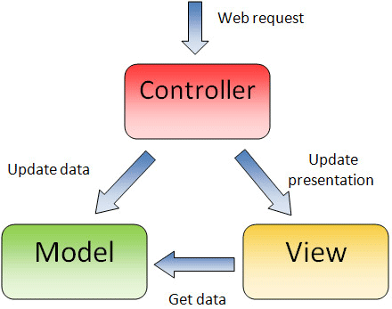
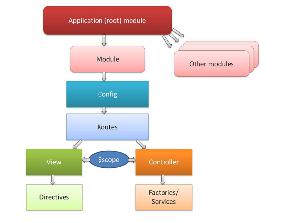
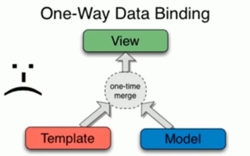
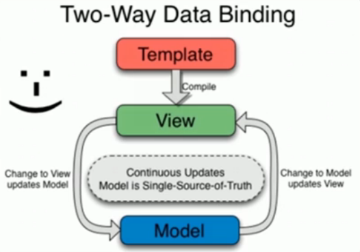
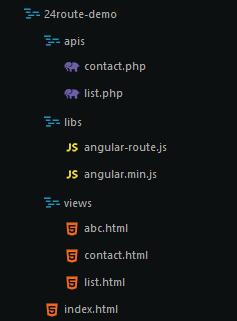

一、Angular 简介
介绍
- 一款非常优秀的前端高级 JS 框架
- 最早由 Misko Hevery 等人创建
- 2009 年被 Google 公式收购，用于其多款产品
- 目前有一个全职的开发团队继续开发和维护这个库
- 有了这一类框架就可以轻松构建 SPA 应用程序
- 轻松构建 SPA（单一页面应用程序）
- 单一页面应用程序：
- 只有一个页面（整个应用的一个载体）
- 内容全部是由AJAX方式呈现出来的
- 其核心就是通过指令扩展了 HTML，通过表达式绑定数据到 HTML。
- 类似的相关框架还有BackBone、KnockoutJS、Vue、React等。
- 更少的代码，实现更强劲的功能
- 将一些以前在后台开发中使用的思想带入前端开发
- 带领当前市面上的框架走向模式化或者架构化
AngularJS 的核心特性
相关链接
下载安装
每种方式安装包，本质都是将angular的库下载到当前文件夹中
体验AngularJS
1 2 3 4 5 6 7 8 9 10 11 12 13 14 15 16 17 18 19
| <!DOCTYPE html> <html lang="en"> <head> <meta charset="UTF-8"> <title>体验angularJS</title> </head> <body ng-app='DemoApp'> <input type="text" ng-model="msg"> <h2>{{msg}}</h2> <script src="./libs/angular.js"></script> <script type="text/javascript"> var App = angular.module('DemoApp', []); App.controller('DemoController', ['$scope', function($scope){ $scope.msg = 'Hello,World!'; }]); </script> </body> </html>
|
MVC简介
MVC是一种开发模式，由模型（Model）、视图（View）、控制器（Controller）3部分构成，采用这种开发模式为合理组织代码提供了方便、降低了代码间的耦合度、功能结构清晰可见。
- 模型（Model）一般用来处理数据（读取/设置），一般指操作数据库。
- 视图（View）一般用来展示数据，比如通过HTML展示。
- 控制器（Controller）一般用做连接模型和视图的桥梁。

二、AngularJS模块化
使用AngularJS构建应用（App）时是以模块化（Module）的方式组织的，即将整个应用划分成若干模块，每个模块都有各自的职责，最终组合成一个整体。
采用模块化的组织方式，可以最大程度的实现代码的复用。
定义应用
通过为任一HTML标签添加ng-app属性，可以指定一个应用，表示此标签所包裹的内容都属于应用（App）的一部分。
1 2 3
| <body ng-app='DemoApp' width="500px" height="400px">
|
定义模块
AngularJS提供了一个全局对象angular，在此全局对象下存在若干的方法，其中angular.module()方法用来定义一个模块。
1 2 3
| var App = angular.module('DemoApp', []);
|
定义控制器
控制器（Controller）作为连接模型（Model）和视图（View）的桥梁存在，所以当我们定义好了控制器以后也就定义好了模型和视图。
1 2 3 4 5
| app.controller('StudentController', ['$scope', function($scope) { }]);
|
模型（Model）数据是要展示到视图（View）上的，所以需要将控制器（Controller）关联到视图（View）上，通过为HTML标签添加ng-controller属性并赋值相应的控制器（Controller）的名称，就确立了关联关系。
1 2 3 4 5 6 7 8
| <table ng-controller="StudentController"> <tr><th>姓名</th><th>性别</th><th>年龄</th></tr> <tr ng-repeat="item in students"> <td>{{item.name}}</td> <td>{{item.sex}}</td> <td>{{item.age}}</td> </tr> </table>
|
以上步骤就是AngularJS最基本的MVC工作模式。
下图是AngularJS的结构，学习AngularJS会围绕下图的结构展开。

三、AngularJS指令系统
指令（Directive）介绍
- AngularJS有一套完整的、可扩展的、帮助web应用开发的指令集
- 在DOM编译期间，和HTML关联着的指令会被检测到，并且被执行
- 在AngularJS中将前缀为ng- 这种属性称之为指令，其作用就是为DOM元素调用方法、定义行为、绑定数据等
- 简单说： 当一个Angular应用启动，Angular就会遍历DOM树来解析HTML，根据指令的不同，完成不同的操作。
- HTML5中允许扩展（自定义的）属性，以data-开头
- AngularJS属性以ng-开头，但是您可以使用data-ng-来让网页对HTML5有效，二者效果相同。
内置指令
1.ng-app 指定应用根元素，至少有一个元素指定了此属性。
+ ng-app指令用来标明一个AngularJs应用程序
+ 标记在一个AngularJs的作用范围根对象上
+ 系统执行时会自动的执行根对象范围内的其他指令
+ 可以在一个页面上创建多个ng-app指令节点
1
| <body ng-app='DemoApp' width="500px" height="400px">
|
2.ng-controller 指定控制器
1 2 3 4 5 6 7 8 9 10 11 12 13 14 15 16
| <table ng-controller="StudentController"> <tr><th>姓名</th><th>性别</th><th>年龄</th></tr> <tr ng-repeat="item in students"> <td>{{item.name}}</td> <td>{{item.sex}}</td> <td>{{item.age}}</td> </tr> </table> app.controller('StudentController', ['$scope', function($scope) { $scope.students = [ {name: 'havenxie', sex: 'man', age: 25}, {name: 'nickwei', sex: 'man', age: 23}, {name: 'beilong', sex: 'man', age: 24} ]; }]);
|
3.ng-show控制元素是否显示，true显示、false不显示
4.ng-hide控制元素是否隐藏，true隐藏、false不隐藏
ng-show/ng-hide指令会根据属性值去确定是否展示当前元素，例如ng-show = false则不会展示该元素,但是元素是存在的只是没有显示而已。
1 2 3 4 5
| <ul class="messages"> <li ng-repeat="item in messages track by $index" ng-show="item.read"> {{item.content}} </li> </ul>
|
5.ng-if控制元素是否“存在”，true存在、false不存在
如果值为false则这个元素不会存在，即DOM中不会有这个元素。
6.ng-src增强图片路径
7.ng-href增强地址
ng-link/ng-src指令用于解决当连接类型数据绑定时造成的加载bug，如
1 2 3 4
| <img src="{{item.url}}"> <img ng-src="{{item.url}}">
|
8.ng-class控制类名
ng-class指令可以设置一个键值对，用于决定是否添加一个特定的类名，键为class名，值为bool类型表示是否添加该类名
1 2 3 4 5
| <ul class="message"> <li ng-repeat="item in messages track by $index" ng-class="{red: item.read}"> {{item.content}} </li> </ul>
|
9.ng-repeat指令
ng-repeat指令用来编译一个数组重复创建当前元素，如
1 2 3 4 5
| <ul class="message"> <li ng-repeat="item in message track by $index"> {{item}} </li> </ul>
|
10.ng-switch配合ng-repeat进行数据过滤
1 2 3 4 5 6 7 8 9 10 11 12 13
| <div ng-controller="DemoController"> <ul> <li ng-repeat="item in items" ng-switch on="item"> <span ng-switch-when="css">{{item}}</span> </li> </ul> </div> <script type="text/javascript"> var App = angular.module('DemoApp', []); App.controller('DemoController', ['$scope', function($scope){ items = ['html', 'css', 'js']; }]); </script>
|
11.ng-include引入模板
引入其他文件的html模块,并放在该标签内
1 2 3 4
| <div ng-include="./header.html" scope="" onload=""></div> -------------------------------------------------------------- <header>hello，world!</header>
|
12.ng-disabled表单禁用
13.ng-readonly表单只读
14.ng-checked单/复选框表单选中
15.ng-selected下拉框表单选中
16.事件扩展 ng-click 、ng-dblclick、ng-blur…
1 2 3 4 5 6 7 8 9 10 11 12 13 14 15
| <div ng-controller="DemoController"> <button ng-click="test()">单击</button> <button ng-dblclick="test2()">双击</button> </div> <script type="text/javascript"> var App = angular('DemoApp', []); App.controller('DemoController', ['$scope', function($scope){ $scope.test = function() { alert('Hello,World!'); }; $scope.test2 = function() { alert('我被双击了'); }; }]); </script>
|
17.ng-bind、 和 ng-bind-template三者实现单项绑定
- 是ng-bind的简写形式
- 同一个标签上可以使用多个，而只能使用一个ng-bind
- 页面刚刷新时，ng-bind不会出现瞬间显示的bug
- 解决页面刚加载时候页面显示的bug：
- 将Angular.js添加到head标签尾部，在使用的标签上添加ng-clock指令
- 手动在head标签处添加angular的bug修复css样式，在使用的标签上添加ng-clock指令。
- ng-bind-template可以绑定多个数据：
<div ng-bind-template=""></div>
18.ng-model 双向数据绑定
需要借助表单元素并且只能是表单元素
19.ng-init 初始化数据（作用和控制器中初始化相同）
1 2 3
| <div ng-controller="DemoController" ng-init="name='havenxie';age=25"> <h1>{{test}}</h1> </div>
|
自定义指令
AngularJS中可以通过代码自定义指令：
1 2 3 4 5 6 7 8 9 10 11 12 13 14 15 16 17 18 19 20
| myModule.directive('hello', function() { return { restrict: 'E', template: '<h1>Hello,World</h1>', <!-- templateUrl: '外部html代码段路径' --> replace: true }; }); myApp.directive('ngHover', function() { return function(scope, element, attr) { element.bind("mouseenter", function() { element.css('background', 'yellow'); }); element.bind('mouseleave', function() { element.css('background', 'none'); }); } });
|
四、AngularJS数据绑定
AngularJS是以数据做为驱动的MVC框架，所有模型（Model）里的数据经由控制器（Controller）展示到视图（View）中。
所谓数据绑定指的就是将模型（Model）中的数据与相应的视图（View）进行关联，分为单向绑定和双向绑定两种方式。
4.1单向数据绑定
如下图所示，只能模型（Model）数据向视图（View）传递。
- 模型变化过后，自动同步到界面上
- 一般纯展示形的数据会用到单项数据绑定
- 使用表达式的方式都是单向的

4.2双向数据绑定
双向绑定则可以实现模型（Model）数据和视图（View）模板的双向传递，如下图所示。
- 两个方向的数据会自动同步
- 模型发生变化会自动同步到视图上
- 视图上的数据变化过后会自动同步到模型上

4.3相关指令
- 在AngularJS中通过“”和ng-bind指令来实现模型（Model）数据向视图模板（View）的绑定
- “”是ng-bind的简写形式，其区别在于通过“”绑定数据时会有“闪烁”现象
- 添加ng-cloak也可以解决“闪烁”现象(需要将angularjs脚本提前或者引入angularjs的css)，通过ng-bind-template可以绑定多个数据。
1 2 3 4 5 6 7 8 9 10 11 12 13 14 15
| <body ng-app="App"> <ul ng-controller="DemoController"> <li ng-bind="name"></li> <li ng-cloak>{{name}}{{age}}</li> <li ng-bind-template="{{name}}{{age}}"></li> </ul> <script src="./libs/angular.min.js"></script> <script> var App = angular.module('App', []); App.controller('DemoController', ['$scope', function ($scope) { $scope.name = 'havenxie'; $scope.age = 10; }]); </script> </body>
|
- 通过为表单元素添加ng-model指令实现视图（View）模板向模型（Model）数据的绑定。
1 2 3 4 5 6 7 8 9 10 11 12 13 14 15 16
| <body ng-app="App"> <div ng-controller="DemoController"> <input type="text" ng-model="msg"> <h4>{{msg}}</h4> <button ng-click="show()">显示</button> </div> <script src="./libs/angular.min.js"></script> <script> var App = angular.module('App', []); App.controller('DemoController', ['$scope', function ($scope) { $scope.show = function () { alert($scope.msg); } }]); </script> </body>
|
- 通过ng-init可以初始化模型（Model）也就是$scope。
1 2 3 4 5 6 7 8 9 10 11 12
| <body> <div ng-controller="DemoController" ng-init="name='havenxie';age=25"> <h1>{{name}}</h1> <h2>{{age}}</h2> </div> <script src="./libs/angular.min.js"></script> <script> var App = angular.module('App', []); App.controller('DemoController', ['$scope', function ($scope){ }]); </script> </body>
|
- AngularJS对事件也进行了扩展，无需显式的获取DOM元素便可以添加事件，易用性变的更强。通过在原有事件名称基础上添加ng-做为前缀，然后以属性的形式添加到相应的HTML标签上即可。如ng-click、ng-dblclick、ng-blur等。
1 2 3 4 5 6 7 8 9 10 11 12 13 14 15 16 17 18 19 20 21 22 23 24 25 26 27 28
| <body> <div ng-controller="DemoController"> <ul style="list-style: none;"> <li><button ng-click="single()">单击</button></li> <li><button ng-dblclick="double()">双击</button></li> <li><input type="text" ng-blur="blur()"></li> <li ng-mouseout="mouseout()">一些内容</li> </ul> </div> <script src="./libs/angular.min.js"></script> <script> var App = angular.module('App', []); App.controller('DemoController', ['$scope', function ($scope) { $scope.single = function () { alert('我被单击了'); }; $scope.double = function () { alert('我被双击了'); }; $scope.blur = function () { alert('失去焦点了'); }; $scope.mouseout = function () { alert('鼠标移出了'); }; }]); </script> </body>
|
五、AngularJS作用域
根作用域
一个AngularJS的应用（App）在启动时会自动创建一个根作用域$rootScope，这个根作用域在整个应用范围（ng-app所在标签以内）都是可以被访问到的。
1 2 3 4 5 6 7 8 9 10 11 12 13 14 15 16 17 18 19 20
| <body ng-app="App" ng-init="name='顺治'"> <div class="parent" ng-controller="ParentController"> <h1>{{name}}</h1> <div class="child" ng-controller="ChildController"> <h2>{{name}}</h2> </div> </div> <script src="angular.min.js"></script> <script> var App = angular.module('App', []); App.controller('ParentController', ['$scope', function ($scope) { }]); App.controller('ChildController', ['$scope', function ($scope) { $scope.name = '雍正'; }]); </script> </body>
|
子作用域
通过ng-controller指令可以创建一个子作用域，新建的作用域可以访问其父作用域的数据。
六、AngularJS过滤器
在AngularJS中使用过滤器格式化展示数据，在“”中使用“|”来调用过滤器，使用“:”传递参数。
一般用于服务端存储的数据装换为用户界面可以理解的数据
内置过滤器
- currency将数值格式化为货币格式
- date日期格式化，年（y）、月（M）、日（d）、星期（EEEE/EEE）、时（H/h）、分（m）、秒（s）、毫秒（.sss），也可以组合到一起使用。
- filter在给定数组中选择满足条件的一个子集，并返回一个新数组，其条件可以是一个字符串、对象、函数
- json将Javascrip对象转成JSON字符串。
- limitTo取出字符串或数组的前（正数）几位或后（负数）几位
- lowercase将文本转换成小写格式
- uppercase将文本转换成大写格式
- number数字格式化，可控制小位位数
- orderBy对数组进行排序，第2个参数可控制方向
1 2 3 4 5 6 7 8 9 10 11 12 13 14 15 16 17 18 19 20 21 22 23 24 25 26 27 28 29 30 31 32
| <body ng-app="DemoApp"> <ul ng-controller="DemoController"> <li>{{price | currency: '￥'}}</li> <li>{{time | date}}</li> <li>{{time | date: 'yyyy-MM-dd hh:mm:ss'}}</li> <li>{{items | filter: 's'}}</li> <li>{{students | filter: {age: 17}}}</li> <li>{{students | filter: json}}</li> <li>{{items | limitTo: 1}}</li> <li>{{str | uppercase}}</li> <li>{{str | lowercase}}</li> <li>{{num | number}}</li> <li>{{num | number: 4}}</li> <li>{{items | orderBy}}</li> <li>{{items | orderBy: '': true}}</li> <li>{{students | orderBy: 'name' : true}}</li> <li>{{students | orderBy: 'age' : false}}</li> </ul> </body> ----------------------------------------------------- var App = angular.module('DemoApp', []); App.controller('DemoController',['$scope', function($scope) { $scope.price = 11.11; $scope.time = new Date(); $scope.items = ['html', 'css', 'js']; $scope.students = [ {name: '小红', age: 18}, {name: '小明', age: 19}, {name: '小米', age: 17}]; $scope.str = 'Hello,AngularJs'; $scope.num = 10.2345; }]);
|
- limitTo 过滤器用于限制一个字符串或数组展示的长度
1 2 3 4 5
| <ul class="messages"> <li ng-repeat="item in messages | limitTo:2"> {{item.content | limitTo: 2}} </li> </ul>
|
自定义过滤器
除了使用AngularJS内建过滤器外，还可以根据业务需要自定义过滤器，通过模块对象实例提供的filter方法自定义过滤器。
1 2 3 4 5
| <body ng-app="DemoApp"> <div ng-controller="DemoController"> <h4>{{info}}:{{havenxie | DemoFilter}}</h4> </div> </body>
|
1 2 3 4 5 6 7 8 9 10
| var App = angular.module('DemoApp',[]); App.controller('DemoController',['$scope', function($scope) { $scope.name = 'havenxie'; $scope.info = 'my name is'; }]); App.filter('DemoFilter', function() { return function(input) { return input[0].toUpperCase() + input.slice(1); }; });
|
七、AngularJS依赖注入
所谓依赖注入是指在运行时自动查找依赖关系，然后将查找到依赖传递给使用者的一种机制。常见的AngularJS内置服务有$http、$location、$timeout、$rootScope等。
推断式注入
没有明确声明依赖，AngularJS会将函数参数名称当成是依赖的名称。这种方式会带来一个问题，当代码经过压缩后函数的参数被压缩，这样便会造成依赖无法找到。
1 2 3 4 5 6 7 8 9 10
| <body ng-app="App"> <div class="box" ng-controller="DemoController"></div> <script src="./libs/angular.min.js"></script> <script> var App = angular.module('App', []); App.controller('DemoController', function ($scope, $http) { }); </script> </body>
|
行内注入
以数组形式明确声明依赖，数组元素都是包含依赖名称的字符串，数组最后一个元素是依赖注入的目标函数。
推荐使用这种方式声明依赖
1 2 3 4 5 6 7 8 9 10 11 12 13
| <body ng-app="App"> <div ng-controller="DemoController"> <h3>{{name}}</h3> </div> <script src="./libs/angular.min.js"></script> <script> var App = angular.module('App', []); App.controller('DemoController', ['$scope', '$http', function (abc, bcd) { abc.name = '依赖注入'; }]); </script> </body>
|
八、AngularJS服务
服务是一个对象或函数，对外提供特定的功能。
内置服务
1.$location是对原生Javascript中location对象属性和方法的封装。
1 2 3 4 5 6 7 8 9 10 11 12 13 14 15 16 17 18 19 20 21 22 23 24 25 26 27 28 29 30
| <body> <dl ng-controller="DemoController"> <dt>{{title}}</dt> <dd>absUrl: {{absUrl}}</dd> <dd>url: {{url}}</dd> <dd>host: {{host}}</dd> <dd>search: {{search}}</dd> <dd>hash: {{hash}}</dd> <dd>protocol: {{protocol}}</dd> <dd>port: {{port}}</dd> </dl> <script src="angular.min.js"></script> <script> var App = angular.module('App', []); App.controller('DemoController', ['$scope', '$location', function($scope, $location) { $scope.title = '学习$location服务'; $scope.absUrl = $location.absUrl(); $scope.url = $location.url(); $scope.host = $location.host(); $scope.search = $location.search(); $scope.hash = $location.hash(); $scope.protocol = $location.protocol(); $scope.port = $location.port(); }]); for(var key in location) { console.log(key + '=>' + location[key]); } </script> </body>
|
2.$timeout和$interval对原生Javascript中的setTimeout和setInterval进行了封装。
1 2 3 4 5 6 7 8 9 10 11 12 13 14 15 16 17 18 19 20 21 22 23 24
| <body> <div ng-controller="DemoController"> <ul style="list-style: none"> <li>{{msg}}</li> <li>{{now|date: 'yyyy-MM-dd hh:mm:ss'}}</li> <li><button ng-click="stop()">停</button></li> </ul> </div> <script src="angular.min.js"></script> <script> var App = angular.module('App', []); App.controller('DemoController', ['$scope', '$timeout', '$interval',function ($scope, $timeout, $interval) { $timeout(function () { $scope.msg = '执行了'; }, 3000); var timer = $interval(function () { $scope.now = new Date; }, 1000); $scope.stop = function () { $interval.cancel(timer); }; }]); </script> </body>
|
3.$filter格式化数据。
1 2 3 4 5 6 7 8 9 10 11 12 13 14 15 16 17 18 19 20 21
| <body> <ul ng-controller="DemoController"> <li>价格: {{price}}</li> <li>大写：{{str}}</li> <li>截取: {{str1}}</li> </ul> <script src="angular.min.js"></script> <script> var App = angular.module('App', []); App.controller('DemoController', ['$scope', '$filter', function ($scope, $filter) { $scope.price = 11.11; var currency = $filter('currency'); $scope.price = currency($scope.price); $scope.str = 'hello angular'; var uppercase = $filter('uppercase'); $scope.str = uppercase($scope.str); $scope.str1 = $filter('limitTo')($scope.str, 2); }]); </script> </body>
|
4.$log日志打印调试信息
1 2 3 4 5 6 7 8
| var App = angular.module('DemoApp', []); App.controller('DemoController', ['$scope', '$log', function($scope, $log) { $log.info('普通信息'); $log.warn('警告信息'); $log.error('错误信息'); $log.log('打印信息'); $log.debug('调试信息'); }]);
|
5.$http用于向服务端发起异步请求。
$http 本质是对XMLHttpRequest对象封装
$http服务是AngularJS中处理Ajax的服务
同时还支持多种快捷方式如$http.get()、$http.post()、$http.jsonp。
1 2 3 4 5 6 7 8 9 10 11 12 13 14 15 16 17 18 19 20 21 22 23 24 25 26 27 28 29 30 31 32 33
| <body ng-app="App"> <div ng-controller="DemoController"></div> <script src="angular.min.js"></script> <script> var App = angular.module('App', []); App.controller('DemoController', ['$scope', '$http', '$log', function ($scope, $http, $log) { $http({ url: 'example.php', method: 'post', headers: { 'Content-Type': 'application/x-www-form-urlencoded' }, params: { name: 'itcast', sex: '男' }, data: { age: 10 } }).success(function (info) { $log.info(info); }); }]); </script> </body>
|
传递的数据可以是’key=val&key=val’形式，这种形式叫formData
Content-Type设置成application/x-www-form-urlencoded
当请求数据类型不一样，后端在接收的时候才去方式也不一样
假如上述方式以PHP为例可以使用$POST接收
application/json;charset=UTF-8 就是json对象形式传递
Request Payload
假如采用上述方式，以PHP为例$_POST就不能接收了。
例子：获取明星数据：
1 2 3 4 5 6 7 8 9 10 11 12 13 14 15 16 17 18 19 20 21 22 23 24 25 26 27 28 29 30 31 32 33 34 35
| <body ng-app="App"> <div ng-controller="StarController"> <button ng-click="getData()">获取数据</button> <table> <tr> <td>姓名</td> <td>年龄</td> <td>性别</td> <td>头像</td> <td>专辑</td> </tr> <tr ng-repeat="star in stars"> <td>{{star.name}}</td> <td>{{star.age}}</td> <td>{{star.sex}}</td> <td>{{star.photo}}</td> <td>{{star.ablum}}</td> </tr> </table> </div> <script src="angular.min.js"></script> <script> var App = angular.module('App', []); App.controller('StarController', ['$http', '$scope', '$log', function ($http, $scope, $log) { $scope.getData = function () { $http({ url: './stars.php', method: 'get' }).success(function (info) { $scope.stars = info; }); } }]); </script> </body>
|
1 2 3 4 5
| <?php $result = file_get_contents('./stars.json'); echo $result; ?>
|
1 2 3 4 5 6 7 8 9 10 11 12 13
| [{//json数据 "name": "王力宏", "photo": "./images/wlh.jpg", "ablum": "<<改变自已>>", "age": 39, "sex": "男" }, { "name": "刘德华", "photo": "./images/wlh.jpg", "ablum": "<<忘情水>>", "age": 42, "sex": "男" }]
|
自定义服务
所谓服务是将一些通用性的功能逻辑进行封装方便使用，AngularJS允许将自定义服务。
方法1. factory方法
1 2 3 4 5 6 7 8 9 10 11 12 13 14 15 16 17 18 19 20 21 22 23 24 25 26
| <body> <div ng-controller="DemoController"> <span>{{now}}</span> </div> <script src="angular.min.js"></script> <script> var App = angular.module('App', []); App.factory('showTime', ['$filter', function ($filter) { var now = new Date(); var date = $filter('date'); return date(now, 'y-M-d H:m:s'); }*/ var now = new Date(); var date = $filter('date'); return { now: date(now, 'yyyy-MM-dd H:m:s') } }]); App.controller('DemoController', ['$scope', 'showTime', function($scope, showTime) { $scope.now = showTime.now; }]); </script> </body>
|
方法2. service方法
1 2 3 4 5 6 7 8 9 10 11 12 13 14 15 16 17 18
| <body> <div ng-controller="DemoController"> <h1>{{now}}</h1> </div> <script src="./libs/angular.min.js"></script> <script> var App = angular.module('App', []); App.service('showTime', ['$filter', function($filter) { var now = new Date(); var date = $filter('date'); this.now = date(now, 'yyyy-MM-dd HH:mm:ss'); }]); App.controller('DemoController', ['$scope', 'showTime', function($scope, showTime) { $scope.now = showTime.now; }]); </script> </body>
|
方法3. value方法定义常量
1 2 3 4 5 6 7 8 9 10 11 12 13 14 15 16 17
| <body> <div ng-controller="DemoController"> {{author}}版本：{{ver}} </div> <script src="angular.min.js"></script> <script> var App = angular.module('App', []); App.value('author', 'itcast'); App.value('version', '1.0'); App.controller('DemoController', ['$scope', 'author', 'version', function($scope, author, version) { $scope.author = author; $scope.ver = version; }]); </script> </body>
|
九、AngularJS模块加载
AngularJS模块可以在被加载和执行之前对其自身进行配置。我们可以在应用的加载阶段配置不同的逻辑。
配置块
- 通过config方法实现对模块的配置，AngularJS中的服务大部分都对应一个“provider”，用来执行与对应服务相同的功能或对其进行配置。
- $log、$http、$location都是内置服务，相对应的“provider”分别是$logProvider、$httpProvider、$locationPorvider。
以$log和$filter为例，修改他的配置
1 2 3 4 5 6 7 8 9 10 11 12 13 14 15 16 17 18 19 20 21 22 23 24 25 26
| <body> <div ng-controller="DemoController"> <h1>{{now}}</h1> <h2>{{str|capitalize}}</h2> </div> <script src="angular.min.js"></script> <script> var App = angular.module('App', []); App.config(['$logProvider', '$filterProvider', function ($logProvider, $filterProvider) { $logProvider.debugEnabled(false); $filterProvider.register('capitalize', function () { return function (input) { return input[0].toUpperCase() + input.slice(1); }; }); }]); App.controller('DemoController', ['$scope', '$log', function ($scope, $log) { $log.debug('debug'); $scope.str = 'hello angular'; }]); </script> </body>
|
运行块
服务以模块形式存在对外提供特定功能，上面都是将服务做为依赖注入进去的，然后再进行调用，除此之外我们也可以直接运行相应的服务模块，AngularJS提供了run方法来实现。
1 2 3 4 5 6 7 8 9 10 11 12 13 14 15 16 17 18 19 20 21
| <body ng-app="App"> <div ng-controller="DemoController">{{name}}</div> <script src="angular.min.js"></script> <script> var App = angular.module('App', []); App.run(['$http', '$rootScope', function ($http, $rootScope) { $http({ url: 'example.php', method: 'get' }).success(function(data) { console.log(data); }); $rootScope.name = '祖宗'; }]); App.controller('DemoController', ['$scope', function($scope) { $scope.name = '后代'; }]); </script> </body>
|
1 2 3
| <?php echo 'Hello,World!'; ?>
|
run方法还是最先执行的，利用这个特点我们可以将一些需要优先执行的功能通过run方法来运行，比如验证用户是否登录，未登录则不允许进行任何其它操作。
十、AngularJS路由
一个应用是由若干视图组合而成的，根据不同的业务逻辑展示给用户不同的视图，路由则是实现这一功能的关键。
SPA介绍
SPA（Single Page Application）指的是通单一页面展示所有功能，通过Ajax动态获取数据然后进行实时渲染，结合CSS3动画模仿原生App交互，然后再进行打包（使用工具把Web应用包一个壳，这个壳本质上是浏览器）变成一个“原生”应用。
在PC端也有广泛的应用，通常情况下使用Ajax异步请求数据，然后实现内容局部刷新，局部刷新的本质是动态生成DOM，新生成的DOM元素并没有真实存在于文档中，所以当再次刷新页面时新添加的DOM元素会“丢失”，通过单页面应可以很好的解决这个问题。
路由
Web应用中又经常通过链接（a标签）来更新页面（视图），当点击链接时还要阻止其向服务器发起请求，通过锚点（页内跳转）可以实现这一点。
实现单页面应用需要具备：
- 只有一页面
- 链接使用锚点
1 2 3 4 5 6 7 8 9 10 11 12 13 14 15 16 17 18 19 20 21 22 23 24 25 26 27 28 29 30 31 32 33 34 35 36 37 38 39 40 41 42 43 44 45 46 47 48 49 50 51 52 53 54 55 56 57 58 59 60 61 62 63 64 65 66 67 68 69 70 71 72 73 74 75 76 77 78 79 80 81
| <!DOCTYPE html> <html lang="en"> <head> <meta charset="UTF-8"> <title>AngularJS 路由和多视图</title> <style> body { padding: 0; margin: 0; background-color: #F7F7F7; font-family: Arial; } .wrapper { width: 980px; margin: 50px auto; } ul { padding: 0; margin: 0; overflow: hidden; list-style: none; background-color: #000; border-radius: 4px; } li { float: left; width: 120px; height: 40px; text-align: center; line-height: 40px; font-size: 18px; } li.active { background-color: #333; } li a { display: block; color: #FFF; text-decoration: none; } .content { margin-top: 30px; font-size: 24px; padding: 0 20px; } </style> </head> <body> <div class="wrapper"> <ul> <li class="active"><a href="#index">Index</a></li> <li><a href="#introduce">Introduce</a></li> <li><a href="#contact">Contact Us</a></li> </ul> <div class="content"> Index Page </div> </div> <script> window.addEventListener('hashchange', function () { var hash = location.hash; hash = hash.slice(1); var xhr = new XMLHttpRequest; xhr.open('get', '10-01.php?hash=' + hash); xhr.send(null); xhr.onreadystatechange = function () { if(xhr.readyState == 4 && xhr.status == 200) { var result = xhr.responseText; document.querySelector('.content').innerHTML = result; } }; }); </script> </body> </html>
|
通过上面的例子发现在单一页面中可以能过hashchange事件监听到锚点的变化，进而可以实现为不同的锚点准不同的视图，单页面应用就是基于这一原理实现的。
AngularJS对这一实现原理进行了封装，将锚点的变化封装成路由（Route）,这是与后端路由的根本区别。
在1.2版前路由功能是包含在AngularJS核心代码当中，之后的版本将路由功能独立成一个模块，需要单独下载angular-route.js
使用
引入angular-route.js
1 2
| <script type="text/javascript" src="angular.js"></script> <script type="text/javascript" src="angular-route.js"></script>
|
实例化模块时，载入ngRoute模块
1
| var App = angular.module('DemoApp', ['ngRoute']);
|
配置路由模块
1 2 3 4 5
| App.config('$routeProvider', function($routeProvider) { $routeProvider.when('/', { template: '首页' }); });
|
布局模板
通过ng-view指令布局模板，路由匹配的视图会被加载渲染到些区域。
1 2 3 4 5 6
| <header>头部</header> <div class="container"> <div ng-view></div> </div> <footer>底部</footer>
|
路由参数
- 提供两个方法匹配路由，分别是when和otherwise，when方法需要两个参数，otherwise方法做为when方法的补充只需要一个参数，其中when方法可以被多次调用。
- 第1个参数是一个字符串，代表当前URL中的hash值。
- 第2个参数是一个对象，配置当前路由的参数，如视图、控制器等。
- template 字符串形式的视图模板
- templateUrl 引入外部视图模板
- controller 视图模板所属的控制器
- redirectTo跳转到其它路由
1 2 3 4
| .when('index/:id', { template: 'Index Page!', controller: 'IndexController' })
|
- 获取参数，在控制中注入$routeParams可以获取传递的参数
1 2 3
| App.controller('IndexController', ['$scope', '$routeParams', function($scope, $routeParams) { console.log($routeParams); }]);
|
例子：将上面例子使用angular及route重写一遍
目录结构：

index.html代码:
1 2 3 4 5 6 7 8 9 10 11 12 13 14 15 16 17 18 19 20 21 22 23 24 25 26 27 28 29 30 31 32 33 34 35 36 37 38 39 40 41 42 43 44 45 46 47 48 49 50 51 52 53 54 55 56 57 58 59 60 61 62 63 64 65 66 67 68 69 70 71 72 73 74 75 76 77 78 79 80 81 82 83 84 85 86 87 88 89 90 91 92 93 94 95 96 97 98 99 100 101 102 103 104 105 106 107 108 109 110 111 112 113 114 115 116
| <!DOCTYPE html> <html lang="en" ng-app="App"> <head> <meta charset="UTF-8"> <title>AngularJS 路由和多视图</title> <style> body { padding: 0; margin: 0; background-color: #F7F7F7; font-family: Arial; } .wrapper { max-width: 980px; margin: 50px auto; } ul { padding: 0; margin: 0; overflow: hidden; list-style: none; background-color: #000; border-radius: 4px; } li { float: left; width: 120px; height: 40px; text-align: center; line-height: 40px; font-size: 18px; } li.active { background-color: #333; } li a { display: block; color: #FFF; text-decoration: none; } .content { margin-top: 30px; font-size: 24px; padding: 0 20px; } </style> </head> <body> <div class="wrapper"> <ul> <li class="active"> <a href="#/index">Index</a> </li> <li> <a href="#/introduce">Introduce</a> </li> <li> <a href="#/contact">Contact Us</a> </li> <li> <a href="#/list">List</a> </li> </ul> <div class="content"> <div ng-view></div> </div> </div> <script src="./libs/angular.min.js"></script> <script src="./libs/angular-route.js"></script> <script> var App = angular.module('App', ['ngRoute']); App.config(['$routeProvider', function ($routeProvider) { $routeProvider.when('/index', { templateUrl: './views/abc.html' }) .when('/introduce', { template: '<h1>introduce Pages!</h1>' }) .when('/contact', { templateUrl: './views/contact.html', controller: 'ContactController' }) .when('/list', { templateUrl: './views/list.html', controller: 'ListController' }) .otherwise({ redirectTo: '/index' }); }]); App.controller('ListController', ['$scope', '$http', function ($scope, $http) { $http({ url: './apis/list.php', }).success(function (info) { $scope.items = info; }); }]); App.controller('ContactController', ['$scope', '$http', function ($scope, $http) { $http({ url: './apis/contact.php' }).success(function (info) { $scope.content = info; }); }]); </script> </body> </html>
|
abc.html代码：
1 2
| <h1>index Pages!</h1> <h2>{{content}}</h2>
|
contact.html代码:
list.html代码:
1 2 3
| <dl> <dd ng-repeat="item in items">{{item}}</dd> </dl>
|
contact.php代码:
1 2
| <?php echo 'contact Pages!!!!!!!';
|
list.php代码:
1 2 3
| <?php $items = array('html', 'css', 'js'); echo json_encode($items);
|
十一、AngularJS其他
AngularJS和jQuery关系
在没有引入jQuery的前提下AngularJS实现了简版的jQueryLite，通过angular.element()方法将DOM对象转换成jQuery对象，但是该方法不能选择DOM节点，需要配合原生DOM选择操作，如果提前引入jQuerye 那么angular.element则完全等于jQuery。
1 2 3 4 5 6 7 8 9 10 11 12 13 14 15 16 17 18 19 20 21 22
| <body> <div ng-controller="DemoController"> <div class="box">普通一个盒子</div> <button>点击</button> </div> <script src="./libs/jquery.min.js"></script> <script src="./libs/angular.min.js"></script> <script> var box = document.querySelector('.box'); var btn = document.querySelector('button'); box = angular.element(box); btn = angular.element(btn); btn.on('click', function () { box.css('color', 'red'); box.animate({ fontSize: '40px' }, 400); }); </script> </body>
|
angular jQLite
angular.element()方法
将DOM元素或者HTML字符串封装成jquery对象，不接收像jquery那样的使用选择器直接查找元素。
1 2 3 4 5
| angular.element('<div id="test">整个DOM元素的内容</div>').html(); var a = document.getElementById('test'); alert(angular.element(a).html());
|
如果页面引入了jquery类库，angular.element()就被等同于jquery中的$(‘’)，如果jquery对象不存在，angular.element可以调用Angular中嵌入的精简版的jQuery library（名为: “jQuery lite” or “jqLite”)，只能使用DOM元素或者HTML字符串作为参数。
其他jQLite方法（使用方法参考jQuery）
- addClass() –添加新样式到class中
- after()
- append() – 追加DOM元素到尾部
- attr() – 添加或获取属性–不支持用函数作为参数
- bind() – 绑定事件，不支持命名空间，选择器，事件对象
- children() – 选择子元素 – 不支持选择器
- clone() – 克隆元素
- contents()
- css() – 添加样式属性–只返回内联样式style=””,不调用getComputedStyle(),设置样式的时候，不能自动将数字转换成字符串或追加’px’,也不能自动添加属性的前缀。
- data() – 绑定或获取数据
- detach() – 移除DOM元素
- empty()
- eq()
- find() – 只能获取元素的标签名
- hasClass()
- html()
- next() – 不支持选择器
- off() – 不支持命名空间，选择器，事件对象
- one() – 不支持命名空间，选择器
- parent() – 不支持选择器
- prepend()
- prop()
- ready()
- remove()
- removeAttr()
- removeClass()
- removeData()
- replaceWith()
- text()
- toggleClass()
- triggerHandler()
- unbind()
- val()
- wrap()
雅虎十三条
- form表单在AngularJS中也是一个指令
- 具备表单解析、格式化、检验等功能
- 依赖H5的智能表单
- AngularJS允许在表单中使用H5的一些检验属性
- 同时会根据校验条件的规则作出相应的数据变化
- 注意：在使用验证时先取消浏览器本身自带的验证（给表单添加novalidate属性）
- 必填项： required / ng-required
- 最小长度： minlength / ng-minlength
- 最大长度： maxlength / ng-maxlength
- 类型： type (bumber、 email)